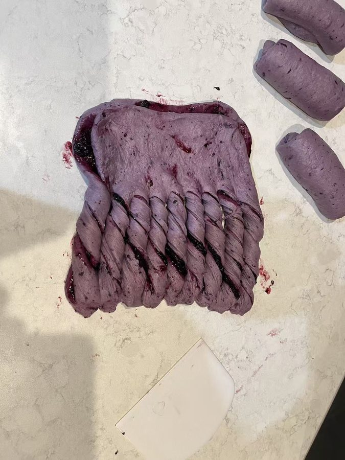
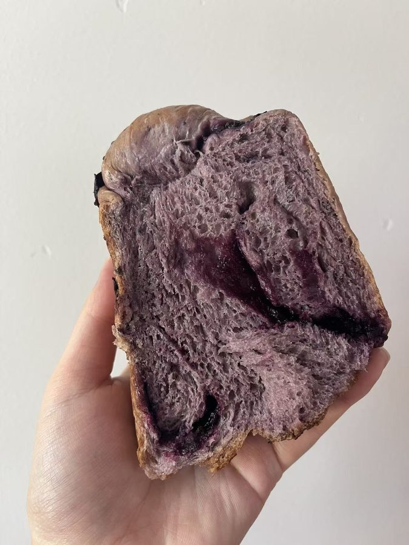

Make the jam
-
Cook the jam
Cook the blueberries with the sugar, stirring, until the berries break down and the mixture turns thick and jammy. Let it cool completely.
No lemon juice. It’s left out on purpose, since this jam goes into the dough and Bunny keeps it from interfering with the gluten.
Make the dough
-
Mix and rest
Combine everything for the dough except the butter and salt: flour, cooled jam, milk, sugar, and yeast. Mix until no dry flour remains, then cover and let it rest so the flour can hydrate.
Rest about 30 min -
Knead in butter and salt
Knead until the dough forms a rough film when stretched. Add the butter and salt and keep kneading until the dough is smooth and stretchy and reaches about 80% development.
No full windowpane needed. A strong, stretchy dough that tears only after a good stretch is enough here. -
Divide and first proof
Divide the dough into 2 equal pieces, one per loaf. Round each, cover, and let them rise somewhere warm.
About 40 min
Fill and shape
Thicken the filling while the dough rises.
-
Thicken the filling
Mix the cornstarch with the water, stir it into the remaining jam, and heat while stirring until the jam thickens and pulls together into a mass. Let it cool.
Why thicken it? Thickened jam weeps much less liquid while the loaf proofs, so the swirls stay neat. -
Roll out
Dust the counter lightly with flour. Roll the dough into a rectangle about 7 × 15 inches, pressing out the air as you go.
-
Spread and fold
Spread the thickened jam over one half of the sheet, so the jam covers a 7 × 7½-inch half. Use only enough to cover the dough; a thick layer is hard to shape. Fold the other half over the jam, so you end up with a piece about 7 × 7½ inches.
-

Cut and twist
Cut the bottom end of the folded dough into 6–8 strips, leaving the top end whole. Twist each strip twice to show the jam pattern.
-
Roll up and pan
Starting from the uncut top end, roll the dough down toward the twisted strands. Place it in the loaf pan seam side down. If you’re making more than one loaf, repeat with each piece.
Bake
-
Final proof
Cover and let the loaf rise in a warm spot until the dough is about 90% of the way to the top of the pan. Preheat the oven to 325°F toward the end.
About 1½–2 hr -
Bake
Bake at 325°F, watching the color. The timing depends on your pan:
Dark pan: about 28 minutes, then take it out.
Silver pan: it browns more slowly, so at about 28 minutes lay a sheet of foil loosely over the top to keep it from getting too dark, and bake another 7–8 minutes, about 35 minutes total.
28–35 min at 325°F -

Unmold and cool
Turn the loaf out of the pan and let it cool on a rack before slicing or packing.